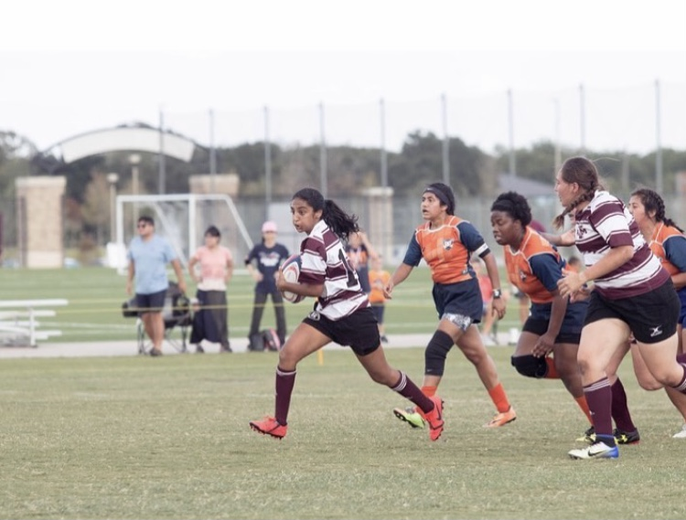
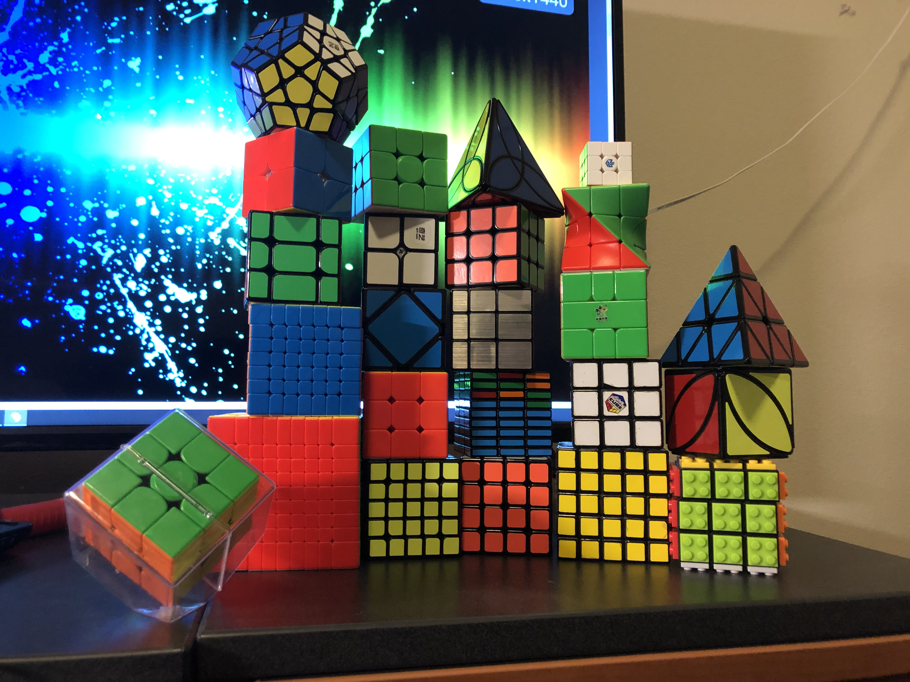

Who am I?


My name is Nina Rao and I am and Junior Computer Engineering Major (electrical track) at Texas A&M University and I am currently planning to graduate in May 2022. I have lived in various countries such as India and Malaysia and love traveling, so I hope I get to visit more countries in the future. Some interests/hobbies I take part in include playing sports, such as rugby, soccer, and running. In addition to this, I also enjoy reading and solving twisty puzzles. In the pictures above you can see me playing rugby on the Texas A&M Women's rugby team and my extensive collection of puzzles.
Why did I choose my major?
My interest in this area of work started when I took an electronics and technology class in the 9th grade. From this class, I was able to learn more about the basics of electronics and I got to build a few of my own projects as well. I built a simple 9v battery speaker that you could plug your phone into. This sparked my interest in creating and made me want to go into electrical engineering. Once I got to university, I realized that I loved coding after I took an introductory engineering class. I decided instead of going just into electrical I should choose computer engineering because this major has allowed me to fuel my interest in both the hardware and software aspects of engineering.
Career Goals
My goal after I graduate is to enter the workforce. With a Computer Engineering degree, my hope is to have achieved a greater understanding of a variety of different programming languages as well as have a good grasp on building with electronics. For my future career, my preference is to work in a team because I thrive off of working with others, but I am also happy to work individually.